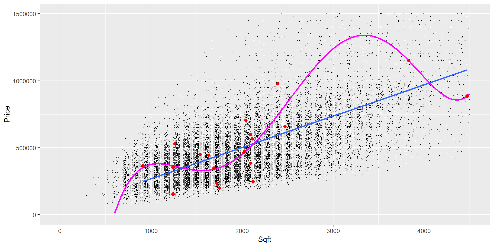

Polynomial Regression
Overfitting/Tuning Explained
Overview
You will learn about:
Overfitting in detail.
Circumstances that make overfitting more likely to occur.
Consequences of overfitting when predicting new data.
Hyper-parameter tuning to avoid overfitting.
- Validation
- Cross Validation»
Overfitting
If a model performs well when approximating the training data but does not perform well when it faces new data to predict outcomes.
Overfitting is one of the most pressing and still not fully solved problems in machine learning.»
Circumstances that Can Lead to Overfitting
If the training dataset does not have a sufficient number of observations.
If the model considers many variables and thus contains many parameters to calibrate.
If the underlying machine learning model is highly non-linear.»
The Data
In what follows we use the Kings County Real Estate dataset.
We want to demonstrate overfitting. Therefore, we ceate conditions that likely trigger overfitting. Consequently, we work only with a very small training dataset (20 observations are 0.1% of total observations). All other observations become testing data:
Data Visualization
There seems to be a non-liner trend:

Training Data Structure
Price Sqft
1 153503 1240
2 199500 1750
3 234950 1720
4 246000 2120
5 355000 1240
6 385000 2090
7 365000 910
8 349000 1690
9 474950 2030
10 450000 1540
11 465000 2020
12 445000 1630
13 568000 2110
14 660000 2470
15 530000 1260
16 600000 2090
17 1150000 3830
18 885000 4470
19 978000 2390
20 705000 2040Polynomial Regression
Regular univariate prediction equation: \[ \widehat{Price}=\beta_1 Sqft+\beta_2 \]
Polynomial univariate prediction equation (degree 5):
\[\begin{eqnarray*} \widehat{Price}&=&\beta_1 Sqft+\beta_2 Sqft^2+\beta_3 Sqft^3 \\ && +\beta_4 Sqft^4+\beta_5 Sqft^5+\beta_6 \end{eqnarray*}\]
Polynomial Regression
Polynomial univariate prediction equation (degree 5):
\[\begin{eqnarray*} \widehat{Price}&=&\beta_1 Sqft+\beta_2 Sqft^2+\beta_3 Sqft^3\\ && +\beta_4 Sqft^4+\beta_5 Sqft^5+\beta_6 \end{eqnarray*}\]
We create \(Sqft^2\), \(Sqft^3\), \(Sqft^4\), and \(Sqft^5\) as new variables in the data and treat them as they were separate variables in a multivariate regression.
This makes the regression linear in variables but non-linear in data.
Consequently, we can use OLS to find the optimal \(\beta s\).»
HOW THE DATA WOULD LOOK LIKE
Price Sqft Sqft2 Sqft3 Sqft4 Sqft5
1 221900 1180 1392400 1643032000 1.938778e+12 2.287758e+15
2 538000 2570 6604900 16974593000 4.362470e+13 1.121155e+17
3 180000 770 592900 456533000 3.515304e+11 2.706784e+14
4 604000 1960 3841600 7529536000 1.475789e+13 2.892547e+16
5 510000 1680 2822400 4741632000 7.965942e+12 1.338278e+16
6 1230000 5420 29376400 159220088000 8.629729e+14 4.677313e+18Comparing Regular OLS and Polynominal Regression (degree=5) 🤓
Code to compare is linked in the footer of this slide.
Polynomial Regression (degree=5) vs. Regular OLS
Aproximation of the Training Data
Polynomial Regression (degree=5) vs. Regular OLS
Aproximation of the Training Data
Polynomial Regression (degree=5) vs. Regular OLS
Training and Testing Data Performance
\[\widehat{Price}=\beta_1 Sqft+\beta_2 Sqft^2+\beta_3 Sqft^3 + +\beta_4 Sqft^4 +\beta_5 Sqft^5 +\beta_{6}\]
Polynomial Regression (degree=10) vs. Regular OLS
Training and Testing Data Performance
\[\widehat{Price}=\beta_1 Sqft+\beta_2 Sqft^2+\beta_3 Sqft^3 + \cdots +\beta_{10} Sqft^{10}+\beta_{11}\]
SUMMARY: POLYNOMIAL REGRESSION
If we do not have enough data polynomial regression with a high degree might lead to overfitting
What is the right degree?
We could try different degrees (e.g., 2, 3, 4, … 10) and see which model performs best.
Which data are we using to measure performance? Training data (overfitting) and testing data (cannot be used for model optimization) are out.
We could split off data from the training dataset (validation data). These validation data are not used to calculate the βs. Instead, they are used to find the best setting for the degree of polynomial regression (aka hyper-parameter of polynomial regression).
Hyper-Parameters
Hyper-Parameters are parameters other than the \(\beta\) parameters, because they can not be optimized by the optimizer.
Hyper-Parameters are like settings for a machine learning model such as the number of polynomials (e.g., \(Sqft^N\)) to be considered for polynomial regression. Another example are the number of \(k\) Nearest Neighbors.
Hyper parameters often make a model more or less complex and thus influence the quality of predicting but also the chance of overfitting.»
PROBLEMS OF SPLITTING VALIDATION DATA OFF THE TRAINING DATA
Reduces data left over to train (finding optimal βs).
If the training dataset is big enough this is no problem. Otherwise, it is a problem!
CROSS VALIDATION (4-FOLD)
For each hyper-parameter setting:
Splits off validation data from training data (e.g. last quarter)
Runs the model and calculates metrics based on validation data.
Splits off validation data from training data (next quarter)
Repeats steps 2 – 3 four times.
We end up with four results for each hyper-parameter setting. We calculate the average of the four results as an result for that specific hyper parameter.
Mock-up CROSS VALIDATION
What follows is a mock-up Cross-Validation for the King County real estate dataset.
We try out three hyper-parameter values for the degree of the polynomial regression.
degree 2:
\[\widehat{Price}=\beta_1 Sqft+\beta_2 Sqft^2+\beta_3\]
degree 3:
\[\widehat{Price}=\beta_1 Sqft+\beta_2 Sqft^2+\beta_3 Sqft^3 + +\beta_4\] degree 5:
\[\widehat{Price}=\beta_1 Sqft+\beta_2 Sqft^2+\beta_3 Sqft^3 + +\beta_4 Sqft^4 +\beta_5 Sqft^5 +\beta_{6}\]
CROSS VALIDATION FOR POLYNOMIAL REGRESSION AND THE KING COUNTY REALESTATE DATASET
MORE REALISTIC DATASPLIT: 80% TRAINING, 20% TESTING
Crossvalidation — The Idea Behind It
Trying Hyper-Parameters for Degree (2,3,5) Using Crossvalidation (degree = 2)
Trying Hyper-Parameters for Degree (2,5,10) Using Crossvalidation (degree = 2 / Fold 1)
Trying Hyper-Parameters for Degree (2,5,10) Using Crossvalidation (degree = 2 / Fold 2)
Trying Hyper-Parameters for Degree (2,5,10) Using Crossvalidation (degree = 2 / Fold 3)
Trying Hyper-Parameters for Degree (2,5,10) Using Crossvalidation (degree = 2 / Fold 4)
Trying Hyper-Parameters for Degree (2,5,10) Using Crossvalidation (degree = 2 / All Folds)
\[MSE_{degree=1}= \frac{40100+40200+40050+40010}{4}\]
10 Steps to Create a Model, Tune it, and Predict
The 10 general steps are:
Generating training and testing data with
initial_split(),training(),testing()Create recipe to determine predictor and outcome variables. Optionally add one or more
step_X()commands. If needed, mark parameters to be tuned withtune()Create model design. If needed, mark parameters to be tuned with
tune()Create workflow with
workflow(), add_recipe()andadd_model()withoutfit()`Create a hyper-parameter grid containing the hyper-parameter combinations to be validated
Create cross validation datasets (aka resamples) containing the folds (use command
vfold())Tune the machine learning model with
tune_grid()and track specific metrics defined bymetric_set(). Runs all hyper-parameter combinations for all folds.Extract the best hyper-parameter combination from the tuning results based on selected metrics (use
select_best())Finalize the model by training it with the full set of training data with the best hyper-parameter combination (see
finalize_workflow() |> fit()).Assessing predictive quality of the final model by using the testing dataset to predict (see
augment() |> metrics()).
Run all 10 Steps to Tune the Real Estate Model 🤓
Code to run all 10 steps is linked in the footer of this slide.
Exercise from AIBook 🤓
Use k-Nearest Neighbors to estimate the color of a wine
Click the link in the footer of this slide to start the exercise.
Research Project 🤓
Click the link in the footer of this slide to download a skeleton of the R script for the research project.
See: Research Project